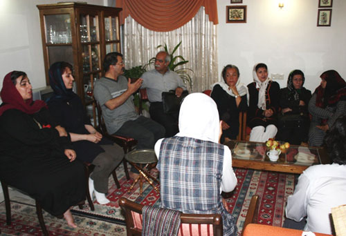

پذيرش > اخبار > پدر کاوه مظفری: 18 تیر را از تقويم رسمي ايران حذف كنید!

 پدر کاوه مظفری: 18 تیر را از تقويم رسمي ايران حذف كنید! پدر کاوه مظفری: 18 تیر را از تقويم رسمي ايران حذف كنید!
8 مرداد 1388 - - نسخه قابل چاپ

تغییر برای برابری - غروب روز دوشنبه 5 مرداد تعدادي از فعالان جنبش زنان، فعالان کمپین یک میلیون امضا و برخی فعالان کارگری به ديدن خانواده کاوه مظفري رفتند. كاوه مظفري فعال حقوق زنان و از اعضاي كمپين يك ميليون امضا، روز 18 تير در حالي كه به همراه مادرزنش عازم بيمارستان بود بازداشت شد و از آن تاريخ تا كنون همچنان در بازداشت به سر ميبرد.
گوهر بیات مادر جلوه جواهری که همراه کاوه بود در باره دلیل بازداشت کاوه گفت كه بعد از چندين بار كه كه مسير خيابان را به سمت بالا و بعد پايين تغيير داديم، چون هر بار با هجوم نيروها و درگيريها مواجه ميشديم در حالي كه مشغول صحبت با پليس بوديم تا بپرسيم كه در شلوغي خيابان از كدام مسير به سمت بيمارستان برویم ، يك لباس شخصي كه از ماموران امنيتي بود كاوه را با نام صدا كرد و او را گرفت و به سمت ماشين برد. در مقابل تمام توضيحات و اصرارهاي من در مورد بيماري و بسته بودن مسيرها فقط گفتند كه شما حالتان خوب نيست به بيمارستان برويد و كاوه الآن آزاد ميشود.
زیبا حاضری مادر کاوه در مورد پيگيري وضعيت و دليل بازداشت كاوه گفت : "همان روز اول مراجعه به دادسراي امنيت تهران منشي دفتر قاضي حداد، آقاي فلاح گفته است كه "كاوه نبايد روز 18 تير از خانه بيرون ميآمد، چون روز 18 تير روز اقدام عليه حكومت است." و در پاسخ او و توضيح بيماري مادر جلوه و اينكه كس ديگري جز دختر و همسر او نبودند كه ايشان را تا بيمارستان همراهي كنند، همچنان پاسخ همان بوده است كه كاوه نبايد در آن روز از منزل خارج ميشد. اخر من نمی دانم مگر بیرون آمدن جرم است؟".
سرانجام پس بعد از 2 هفته پيگيري مدوام در دادگاه انقلاب، زندان اوين و شعبه هاي مختلف دادسراي امنيت، مادر كاوه بعد از حدود پنج ساعت انتظار و تحمل برخوردهاي توهين آميز و خشن كارمندان آنجا اجازه ملاقات با خود قاضي حداد را می گیرد اما قاضي حداد هم همان حرفهاي دو هفته قبل منشي اش را تکرار کرده بود. مادر کاوه اصرار كرده بود که به خاطر اتفاقاتی که در مورد بازداشت شدگان افتاده می خواهد صداي كاوه را بشنود تا دست كم در مورد سلامتي او اطمينان حاصل كند. فقط در اين مورد قاضي حداد در تماس تلفني به اوين اعلام ميكند كه به تمام بازداشت شدگان 18 تير اجازه تماس با خانواده داده بشود. و بدین ترتیب عصر همان روز كاوه براي اولين بار با منزل تماس گرفته بود.
پدر كاوه در اين باره ميگويد: " با اين وضعيت كه در چنين روزي در خيابان بودن جرم محسوب مي شود، من پيشنهاد ميكنم كه دولت لايحهاي را به مجلس ببرد كه در تقويم رسمي ايران روز 18 تير را حذف كنند و بعد از تاريخ 17 تير، 19 تير باشد كه باعث دردسر براي مردم و خود مسئولان هم نشود كه مجبور بشوند در اين روز افراد را بازداشت كنند."
جلوه جواهري توضيح ميدهد كه در حال حاضر كاوه، همسرش در بند قرنطيه است كه وضعيتي مشابه بند 240 دارد. علاوه بر آن اضافه مي كند كه كاوه در تماس تلفني گفته که در آن بند ازدحام زیادی وجود دارد به طوري که در هر اتاق 60-70 نفر حضور دارند و هر شب 30 نفر مجبورند روي زمين بخوابند. علاوه بر آن بعد از يك سري بازجويي، براي بعضي از افراد بازجويي ها دوباره انجام شده است و حتي تعدادي از آزاد شدگان قبلي دوباره بازداشت شده اند.
طبق گفته خانواده کاوه تنها باري كه کاوه تفهيم اتهام شده روز 19 تير بوده است كه آقاي حيدري فر در حياط كلانتري تمام 300 نفري را كه در آنجا حضور داشتند با برگه هاي كپيشدهاي كه به طور يكسان چندين اتهام اقدام عليه امنيت ملي، تباني براي تجمع، اخلال در نظم عمومي، تخريب اموال عمومي و تمرد از دستور پليس در آن مشخص شده به بازداشت شدگان داده براي امضا، صرف نظر از نحوه بازداشت هر كس.
مادر و پدر كاوه تاکنون برای پی گیری وضعیت فرزندشان تلاش زیادی کرده اند آنها به مركز حقوق بشر اسلامي و نيز ستاد حقوق بشر قوه قضاييه نيز مراجعه كرده اند و به هر دو مركز شكايت خود را در مورد بازداشت پسرشان اعلام كردهاند و هر دو مركز هم اطلاعاتي را راجع به بازداشت مجدد كاوه ثبت كرده اند بدون اينكه پاسخ مشخصي در مورد وضعيت جديد او داده باشند.
علاوه بر این ، ستاد حقوق بشر قوه قضاييه از خيل زياد شاكيان و خانواده هايي كه گفته است كه اين روزها براي شكايت و پيگيري وضعيت عزيزان و فرزندان بازداشت شدهشان به انجا مراجعه كرده اند. جالب آنکه از آقاي مظفري پدر کاوه پرسيدهاند چرا فزرند شما كه پسر است در كارهاي زنان دخالت ميكند؟
آقاي مظفري در جواب توضيح داده است كه : "با اين استدلال شما، قوه قضاييه بايد تمام كسبه خيابان باغ سپهسالار كه كفش زنانه ميفروشند و كوچه برلن را كه لباس زير زنانه دارند، محاكمه كند كه در امور زنان دخالت ميكنند."
ارسال به
بالاترین
،
توییتر
،
فریندفید
،
فیسبوک
در همين بخش :
 پروین ذبیحی برنده جایزه حقوق بشری سازمان غيردولتى اتريشى سودويند شد پروین ذبیحی برنده جایزه حقوق بشری سازمان غيردولتى اتريشى سودويند شد
پخش کارت پستال و بروشور در روز جهانی زن در تهران
تمدید زمان برای امضای بیانیهی جمعی از فعالان زن به مناسبت هشت مارس
مجوزی که در نطفه خفه شد
بیش از 2000 امضا در اعتراض به تبعیض های آموزشی به مجلس تحویل داده شد
ديگر بخش ها :
طرح یک میلیون امضا
|
مقالات
|
سایت نوشته ها
|
اخبار
|
گزارش كمپين
|
گفت و گو
|
علیه سکوت
|
كوچه به كوچه
|
نامه های شما
|
گزارش ویژه
|
گفتگو با اعضا
|
ویژه سالگرد کمپین
|
تصویر برابری
|
دل آرام علی
|
تریبون
|
مقالات
|
تاریخ شفاهی
|
خارج از چارچوب
|
کتابخانه
|
درباره کمپین
|
کمپین در شهرها
|
کمپین در بند
|
صدای تغییر
|
ویژه 22 خرداد
|
لایحه حمایت از خانواده
|
گالری
|
عشا مومنی
|
امیر یعقوبعلی
|
خدیجه مقدم
|
راحله عسگری زاده و نسیم خسروی
|
پروین اردلان،جلوه جواهری، مریم حسین خواه، ناهید کشاورز
|
زینب پیغمبرزاده
|
سعیده امین، سارا ایمانیان، محبوبه حسین زاده، ناهید کشاورز و همایون نامی
|
احترام شادفر
|
نسیم سرابندی زاده،فاطمه دهدشتی
|
وبلاگ مهمان
|
پرونده خرم آباد
|
دستگیری ها
|
مریم مالک
|
پرستو اللهیاری
|
مهرنوش اعتمادی
|
سمیه رشیدی
|
Other Languages
|
همراهان
|
«فراخوان کمپین ده روز با بهاره هدایت»
| English
|